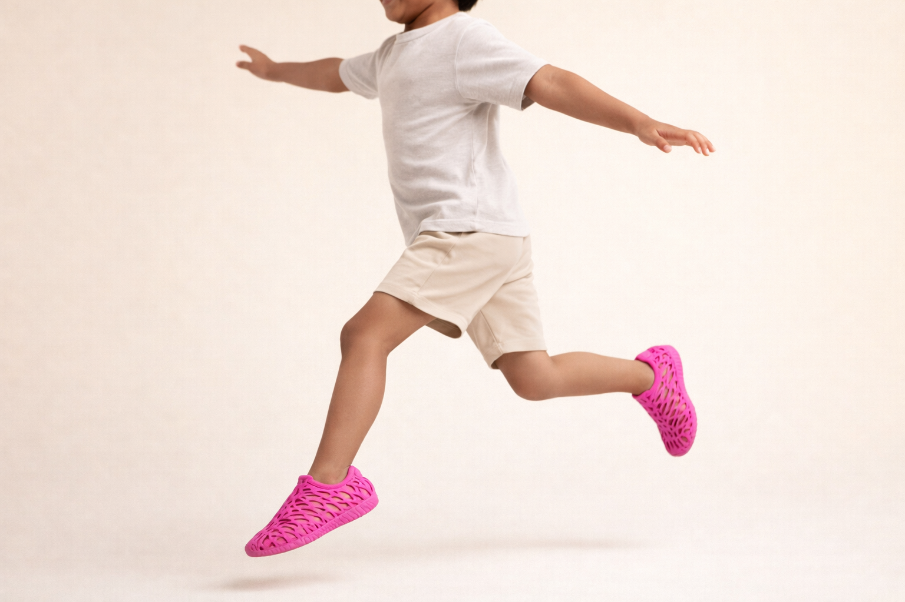
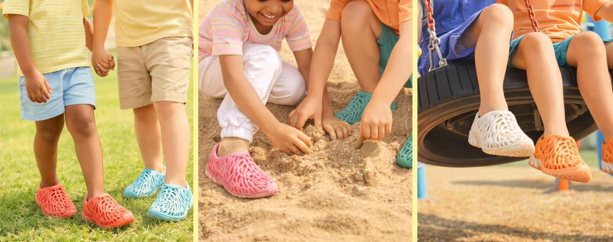

MORPH
Startup · Closed-loop, personalized footwear system

MORPH is an active realization of my broader explorations around closed-loop systems, localized production, and adaptive design. It translates speculative ideas into a tangible product system reimagining how footwear can be designed, produced, used, and reintegrated. The focus is on building deployable systems that reduce waste while adapting to individual needs.

At its core, MORPH operates as a closed-loop footwear system. Users scan their feet, customize fit and design, receive a 3D-printed shoe, and return it for recycling into future prints. This creates a continuous material and data loop that improves fit over time while minimizing excess production.

The initial user group is parents of children aged 4–8. This is a high-growth phase where shoes are replaced frequently, and purchasing decisions prioritize comfort, adaptability, and ease. MORPH addresses this by offering a system that evolves with the child while reducing the need for repeated, wasteful purchases.

Showcased at NY Hardware Meetup
Visitors engaged directly with the lattice swatches, interacting with the material through touch and exploration. The tactile nature of the experience sparked curiosity, prompting questions and a sense of excitement around the possibilities of the system.


"These lattice swatches could have other applications, like shock absorption in car seats." — Visitor 1